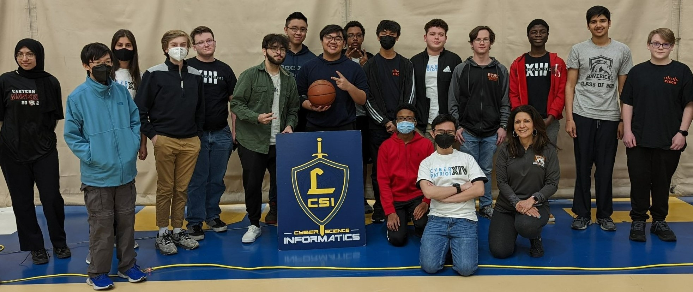

Details
The competition will be held on Saturday, March 25, 2023, from 9 a.m to 3 p.m at Loyola Blakefield.

Schedule
9:00 a.m.
Registration and introductory talks (all attendees)
10 a.m.
Competition Begins
TBD
Advanced Competitors Only: IOT City Challenges
2:30 p.m
Competition Ends
3:00 p.m.
Awards Ceremony and Closing Ceremony
Prizes
1st: ???
2nd: ???
3rd: ???
Raffle Prizes
Portable Charging Stations
Raspberry PI
Sweatshirts
Backpacks
HP Revolve Laptop
Oculus Quest 2
Reasons To Compete
The Loyola Blakefield Cyber Challenge is a competition and educational platform made for students of all skill levels. The challenges are designed to both teach and assess competitors' abilities to think outside the box when handling cyber threats and solving cryptographic puzzles. Students are encouraged to learn through hands-on experience with real cybersecurity challenges, and they are supported by a team of LBCSI students available to help for the entire duration of the competition. No previous experience with computers is necessary, and best of all: It's FREE!
How It's Structured
LBC2 is meant to provide new students an opportunity to learn about cybersecurity while also allowing experienced students to compete against each other to prove their skills. The competition is made up of individual challenges created by LBCSI students. Hidden somewhere in each challenge is a “flag” that the competitors are to search for. Each challenge assesses a particular skill associated with cybersecurity, ranging from Programming to Network Analysis. Example challenges and introductory educational resources will be posted as the competition nears.
How To Get Involved
Attendance
Register for the competition or the summit. Parents, when you drop off your student please join us for the summit to get insights into opportunities in the field.
Mentorship
Are you in the IT, Security, or Engineering fields? Volunteer to be a mentor for the day and be part of the teaching and learning experience
Financial Support
Consider sponsoring the event. The goal is this is a free day for all participants.
Tell Others
Tell your friends, business associates, or anyone else that may be interested. Every business needs IT and cyber support from the small 5 employee company to the fortune 500.
Summit
If you wish to be a speaker at this year's lbc2, please contact Mr. Stephen Morrill. If you wish to attend the summit, register below.
What You Need To Bring
Laptop (Don't forget a charger)
- 64-bit x86 Processor.
- 1.3 GHz or faster core speed.
- 2 GB RAM minimum/ 4 GB RAM recommended
- 8 GB minimum available hard disk space for guest operating systems.
Loaner computers will be available for beginner participants as needed.